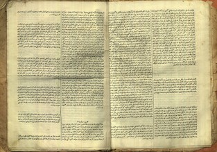

Takvim-i Vekayi, No. 1
1 November 1831 (25 Jumada al-Akhir 1247 AH)
Built with
Claude Cowork
(Opus 4.6) · OpenSeadragon · IIIF
▼
Tiles: iiif_static (Python) · Visual capture: V3-S-Minimal (Gemini) · Semantic: V3-T-Government-Gazette (Claude Opus 4.5)
AI + History Collaboratory, February 2026
P8
P7
P6
P5
P4
P3
P2
P1
No region selected
Layers
▼
Original Script
Transliteration
Literal English
Modernized English
Summary Translation
Regions
▼
🔍
Click a highlighted region on the image
or select a region above
◀
P1–P2
P3–P4

P5–P6
P7–P8
AI + History Collaboratory — IIIF Demo
GitHub
·
IIIF Manifest